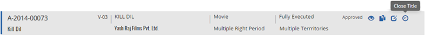
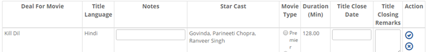


	<section>
		<article>
			<h2>Close Title<span></span></h2>
			<div>
				<p></p>
				<p>When a title is closed and the title is terminated from the deal, close title option is used. This button will appear only once deal is approved.</p>

				<div class="triangle-border top">				
					
				</div>

				<p>Once user clicks on Close Title button, General page will open with Close Title button. When user clicks on it, the page will look like this.</p>

				<div class="triangle-border top">				
					
				</div>

				<p>Here user has option to enter Title Close Date and Closing Remarks.</p>

				<p>Select date and click on Save to Close the title.</p>

				<p><b>Note:</b></p>

				<p>- If a corrosponding syndication deal is created, Close Date can not be less than syndication deal rights end date.</p>

				<p>- Title Close Date would replace the acquisition rights end date and the right will not be available to edit or delete.</p>

				<p>- If any runs are added for that title after the Title Close Date, they would be removed.</p>

			</div>
		</article>
	</section>